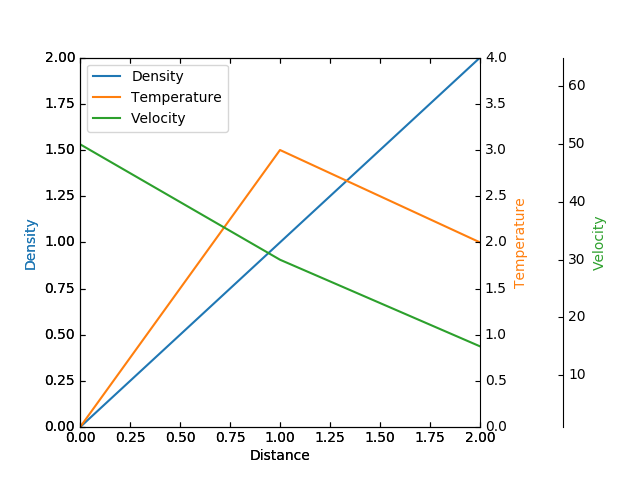

Version 2.2.3
Note
Click here to download the full example code
Parasite axis demo
The following code is an example of a parasite axis. It aims to show a user how to plot multiple different values onto one single plot. Notice how in this example, par1 and par2 are both calling twinx meaning both are tied directly to the x-axis. From there, each of those two axis can behave separately from the each other, meaning they can take on separate values from themselves as well as the x-axis.
from mpl_toolkits.axes_grid1 import host_subplot
import mpl_toolkits.axisartist as AA
import matplotlib.pyplot as plt
host = host_subplot(111, axes_class=AA.Axes)
plt.subplots_adjust(right=0.75)
par1 = host.twinx()
par2 = host.twinx()
offset = 60
new_fixed_axis = par2.get_grid_helper().new_fixed_axis
par2.axis["right"] = new_fixed_axis(loc="right",
axes=par2,
offset=(offset, 0))
par1.axis["right"].toggle(all=True)
par2.axis["right"].toggle(all=True)
host.set_xlim(0, 2)
host.set_ylim(0, 2)
host.set_xlabel("Distance")
host.set_ylabel("Density")
par1.set_ylabel("Temperature")
par2.set_ylabel("Velocity")
p1, = host.plot([0, 1, 2], [0, 1, 2], label="Density")
p2, = par1.plot([0, 1, 2], [0, 3, 2], label="Temperature")
p3, = par2.plot([0, 1, 2], [50, 30, 15], label="Velocity")
par1.set_ylim(0, 4)
par2.set_ylim(1, 65)
host.legend()
host.axis["left"].label.set_color(p1.get_color())
par1.axis["right"].label.set_color(p2.get_color())
par2.axis["right"].label.set_color(p3.get_color())
plt.draw()
plt.show()
Keywords: matplotlib code example, codex, python plot, pyplot Gallery generated by Sphinx-Gallery